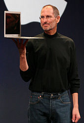

"Steven Paul Jobs"
- 👉 1955: Steve Jobs is born on February 24 in San Francisco, California.
- 👉 1972: Jobs graduates from Homestead High School in Cupertino, California, where he was introduced to Steve Wozniak, who would later co-found Apple Inc. with him.
- 👉 1974: Jobs briefly attends Reed College in Portland, Oregon, but drops out after six months.
- 👉 1974-1976: Jobs returns to California and takes on various jobs, including working for video game manufacturer Atari and traveling to India.
- 👉 1976: Jobs and Wozniak co-found Apple Computer Company (later renamed Apple Inc.) in Jobs' parents' garage. They release the Apple I computer.
- 👉 1977: Apple releases the Apple II, which becomes a commercial success and establishes Apple as a leading player in the personal computer industry.
- 👉 1980: Apple goes public with its initial public offering (IPO), making Jobs a multimillionaire.
- 👉 1983: Jobs recruits John Sculley, the former president of PepsiCo, to become Apple's CEO.Apple releases the Lisa computer, which is not successful.
- 👉 1984: Apple launches the Macintosh computer with a now-famous commercial during the Super Bowl. However, the Macintosh initially faces challenges in the market.
- 👉 1985: Due to conflicts with the Apple board, Jobs resigns from Apple and starts NeXT Inc., a computer company that focuses on high-end workstations.
- 👉 1986: Jobs buys Pixar Animation Studios from George Lucas for $10 million, which later becomes a major success in the animation industry.
- 👉 1996: Apple acquires NeXT, and Jobs returns to Apple as an advisor.
- 👉 1997: Jobs becomes Apple's interim CEO after the ousting of Gil Amelio. He begins reorganizing the company and focuses on product development.
- 👉 1998: Apple introduces the iMac, which becomes a significant success and revitalizes the company.
- 👉 2000: Jobs drops the "interim" from his title and becomes Apple's permanent CEO.
- 👉 2001: Apple introduces the iPod, a portable media player, which revolutionizes the music industry.
- 👉 2003: iTunes Music Store is launched, allowing users to legally purchase and download music online.
- 👉 2007: Apple releases the iPhone, a revolutionary smartphone that combines a phone, music player, and internet communication device.
- 👉 2010: Apple introduces the iPad, a tablet computer that popularizes the tablet market.
- 👉 2011: Jobs takes a medical leave of absence, and Tim Cook assumes his responsibilities as CEO. Jobs resigns as CEO in August due to his declining health.
- 👉 2011: Steve Jobs passes away on October 5, 2011, in Palo Alto, California, at the age of 56.
**Steve Jobs was a visionary entrepreneur and played a crucial role in shaping the modern technology landscape. His contributions to Apple, Pixar, and the consumer electronics industry as a whole continue
to have a profound impact to this day.**